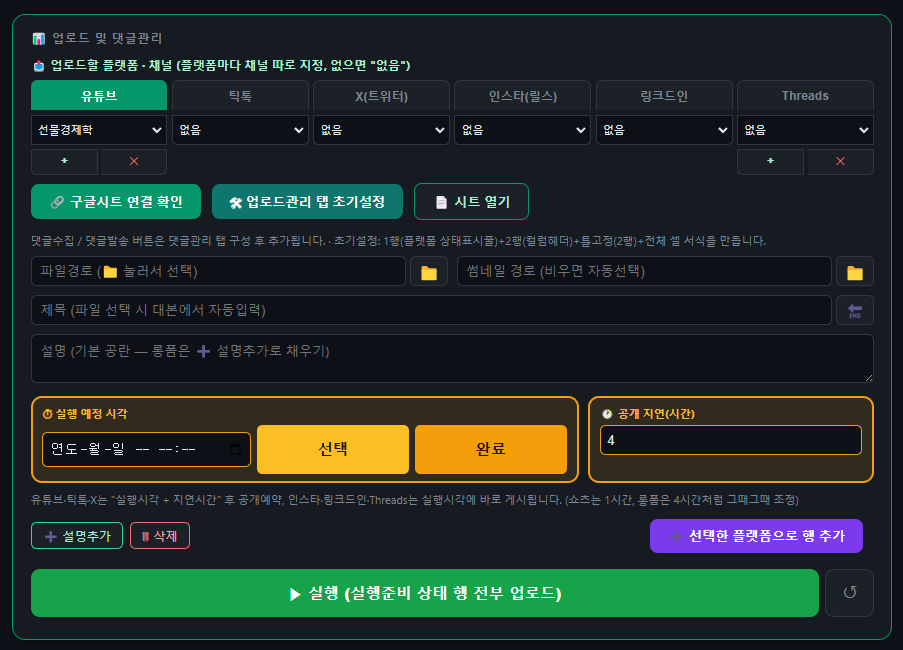

STAGE 07 / 07
완성된 영상을 채널에 직접 업로드한다
완성된 영상을 유튜브·틱톡 채널에 업로드하고 예약 발행까지 관리합니다. 모든 업로드는 채널 소유자 본인이 인증한 계정으로만 이루어지며, 업로드 현황은 구글 시트에서 한눈에 확인할 수 있습니다.
SCREEN화면 미리보기

실제 업로드 관리 화면 — 플랫폼·채널 선택, 예약 시각, 공개 지연 시간을 설정해 일괄 업로드합니다
CAN DO이 단계에서 할 수 있는 일
- 본인 계정 인증 — 유튜브·틱톡 공식 OAuth 인증을 통해 채널 소유자 본인의 계정에만 연결됩니다.
- 예약 발행 — 제목, 설명, 썸네일을 지정하고 원하는 시간에 자동으로 게시되도록 예약합니다.
- 통합 관리 시트 — 여러 채널의 업로드 상태를 구글 시트 하나에서 확인하고 관리합니다.
- AI 콘텐츠 공개 표시 — 업로드 시 AI 생성 콘텐츠임을 알리는 표시를 플랫폼 정책에 맞춰 자동 적용합니다.
- 썸네일 자동 압축 — 각 플랫폼이 요구하는 용량·규격에 맞게 썸네일 이미지를 자동으로 압축합니다.